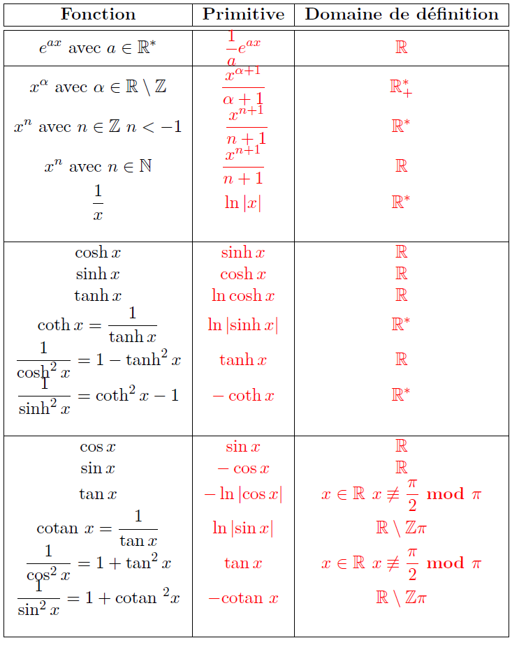
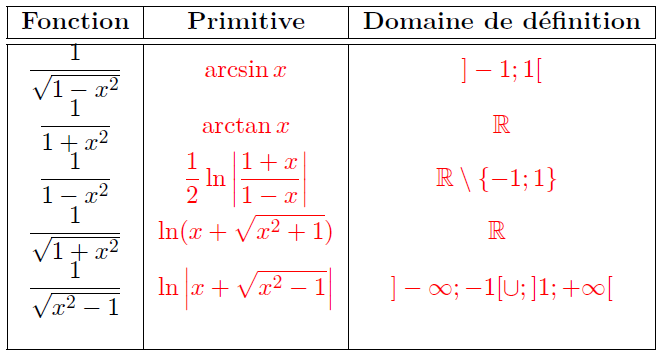

Primitive et intégrale des fonctions continues¶
Dans tout ce qui suit, \(I\) désigne un intervalle de \(\mathbb R\) contenant au moins deux points distincts.
Primitive d’une fonction continue sur un intervalle¶
Définition
Soit \(f\) est une fonction de \(I\) dans \(\mathbb R\) continue sur \(I\). On appelle primitive de \(f\) sur \(I\) toute fonction de \(I\) dans \(\mathbb R\), dérivable sur \(I\) et dont la dérivée est \(f\).
Proposition
Soit \(f\) est une fonction de \(I\) dans \(\mathbb R\) continue sur \(I\).
Si \(F\) est une primitive de \(f\) sur \(I\), alors les primitives de \(f\) sur \(I\) sont les fonctions \(F+\lambda\) avec \(\lambda \in \mathbb R\).
Démonstration
Les fonctions \(F+\lambda\) sont dérivables sur \(I\) est leurs dérivées valent \(f\). Donc \(F+\lambda\) sont des primitives de \(f\).
Soit \(G\) une primitive de \(f\) donc \(G-F\) a une dérivée nulle sur \(I\). Donc \(G-F\) est une constante sur \(I\).
Primitives usuelles¶
Les deux tableaux suivants contiennent les primitives des fonctions usuelles :
 {kind=link}
{kind=link}
Exemple
Les primitives d’une fonction polynomiale de la forme
sont de la forme \(F + \lambda\) avec:
Théorème fondamental¶
Proposition
Soient \(f\) une fonction continue par morceaux sur \(I\) et \(a\) un point de \(I\). La fonction \(F_a\) définie par :
est continue sur \(I\)
Théorème
Soient \(F\) une fonction continue de \(I\) dans \(\mathbb{R}\) et \(a\) un point de \(I\). La fonction \(F_a\) définie par :
est une primitive de \(f\) sur \(I\). C’est l’unique primitive qui s’annule en \(a\).
Corollaire
Soient f une fonction continue sur \(I\), ainsi que \(\alpha\) et \(\beta\) deux fonctions dérivables sur un intervalle \(J\) et a valeurs dans \(I\). La fonction définie sur \(J\) par :
est dérivable sur \(J\) et sa dérivée est:
Exemple
Si \(f\) est une fonction continue par morceaux sur \(\mathbb{R}\) et périodique de période \(T\), alors:
est indépendante de \(x\) (constante), car:
Proposition
Soient \(f\) une fonction continue par morceaux sur \(I\) et \(a\) un point de \(I\). Si \(F\) est une primitive de \(f\) sur \(I\), on a :
Exemple
Soit \(f(x)=\alpha x + \beta\). Une primitive de \(f\) est \(x \mapsto \dfrac{\alpha}{2}x^2 + \beta x\), donx:
Corollaire
Si \(f \in \mathcal C (I)\)(dérivable et sa dérivée est continue), alors pour \(a, x \in I\) on a:
Notations:
Dans ce qui suit, on va noter la différence de la fonction \(F\) entre \(a\) et \(b\): \([F(x)]_a^b\). Ceci dit,
Lorsque \(f\) est une fonction continue, la notation \(\int f(x)dx\) représente une primitive quelconque de la fonction \(f\) (\(\int f(x)dx = F(x) = Cst\)).